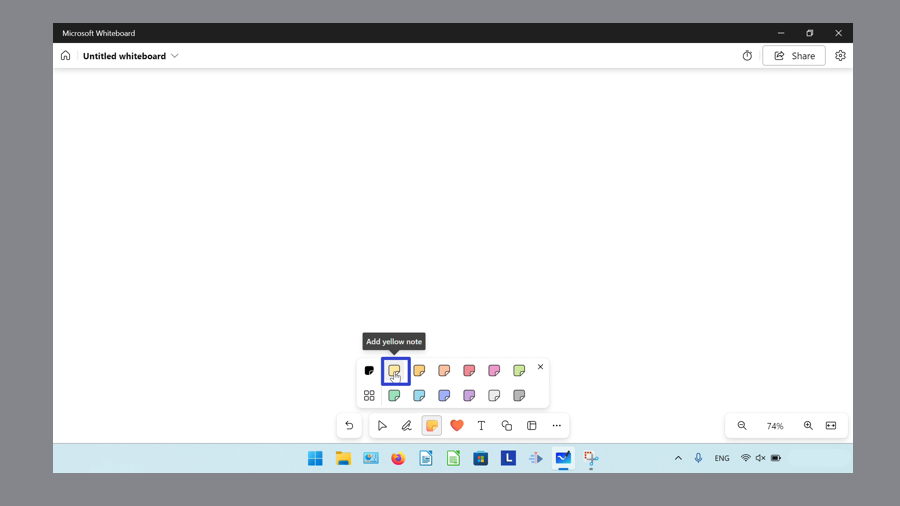
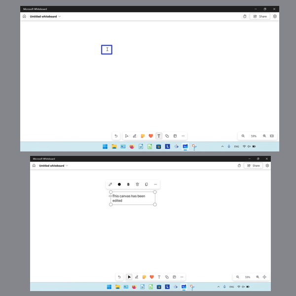

How to Insert Objects in the Microsoft Whiteboard App (Windows 11)
This tutorial covers:
How to Change an Ink Object to a Shape:
How to Insert a Sticky Note:
How to Insert a Note Grid
How to Insert a Reaction:
How to Insert Text:
How to Insert Shapes
How to Undo:
How to Redo:
No time to scroll down? Click through this tutorial presentation:
Follow along with a video tutorial:
How to Change an Ink Object to a Shape With Click
- Step 1: First switch to Inking mode, then click and drag the mouse to draw an Ink object.
- Step 2: On the bottom toolbar click the “Select” or arrow button, then click to select the Ink object.
- Step 3: In the menu that opens, click the “Convert to shapes” button.
How to Change an Ink Object to a Shape With Keyboard
- Step 1: Switch to Inking mode and draw an Ink object.
- Step 2: On the bottom toolbar click the “Select” or arrow button.

- Step 3: Click to select the Ink object, and on the keyboard press Alt + B.
How to Insert a Sticky Note With Click
- Step 1: First open a whiteboard. On the bottom toolbar, click the “Add note or note grid” button.

- Step 2: In the menu that opens, click to select a sticky note. 
- Step 3: Click anywhere in the canvas to insert the sticky note.

How to Insert a Sticky Note With Right Click
- Step 1: Open a whiteboard. Right click anywhere on the canvas.

- Step 2: In the menu that opens, click the “Note” option.

How to Insert a Sticky Note From a Note Grid
- Step 1: First insert a note grid. In the upper right of the note grid, click the “Add note” button.
How to Insert a Note Grid
- Step 1: Open a whiteboard. On the bottom toolbar, click the “Add note or note grid” button.
- Step 2: In the menu that opens, click the “Note grid” button.
- Step 3: Click to select a note grid.
- Step 4: Click anywhere in the canvas to insert the note grid.
How to Insert a Reaction With Click
- Step 1: First open a whiteboard. On the bottom toolbar click the “Add reaction” button.
- Step 2: In the menu that opens, click to select a reaction.
- Step 3: Click anywhere in the canvas to insert the reaction.

How to Insert a Reaction into a Sticky Note
- Step 1: Insert a sticky note into the canvas. Hover the mouse over the lower left corner of the sticky note.
- Step 2: In the menu that opens, click to select a reaction.

How to Insert Text With Click
- Step 1: First open a whiteboard. On the bottom toolbar click the “Add text” button.

- Step 2: Click anywhere in the canvas, then type any text. 
How to Insert Text With Right Click
- Step 1: Open a whiteboard. Right click anywhere on the canvas.
- Step 2: In the menu that opens, click “Text” and type any text.

How to Insert Shapes
- Step 1: First open a whiteboard. On the bottom toolbar click the “Add shape or line” button.
- Step 2: In the menu that opens, click to select a shape or line.

- Step 3: Click anywhere in the canvas to insert that shape, or click and drag to insert a line.

How to Undo With Click
- Step 1: Insert an object (Ink object, sticky note, reaction, text, shape) onto the canvas. In the lower left click the “Undo” button.
How to Undo With Keyboard
- Step 1: First insert an object (Ink object, sticky note, reaction, text, shape) onto the canvas. On the keyboard press Ctrl + Z.

How to Redo With Click
- Step 1: Undo an action. In the lower left click the “Redo” button.

How to Redo With Keyboard
- Step 1: First Undo an object. On the keyboard press Ctrl + Y.

Save a copy of these instructions for later with this free tutorial PDF.